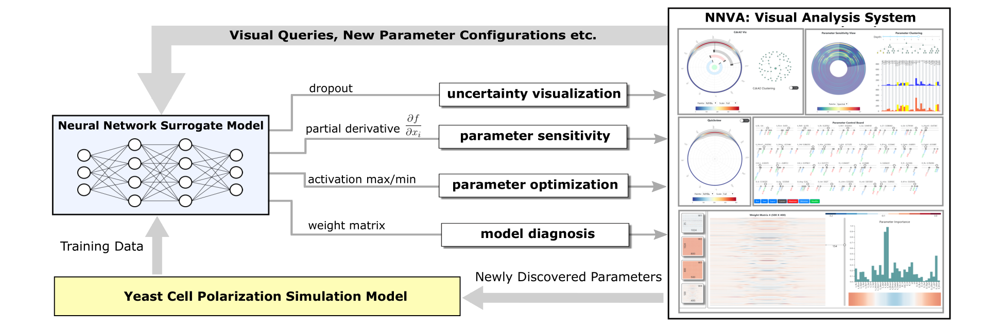
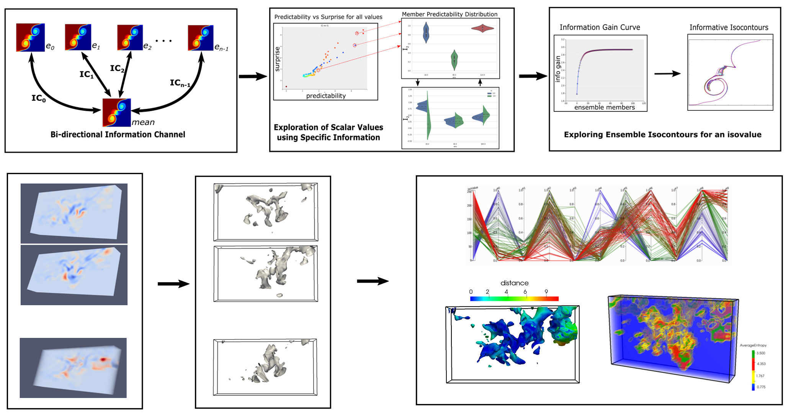

1. Machine Learning Assisted Visual Analytics i.e, ML4VA

Besides accurately predicting the outcomes of high-dimensional non-linear functions, many state-of-the-art deep learning models can also be utilized to interpret and analyze the underlying physical phenomena in greater details. By opening the so called, black-box of these powerful machine learning models, we can extract interesting insights about the application domain which the models learned during the training process. In this project, we incorporate some of the recent advances from the field of uncertainty quantification, interpretability, and explainability of deep learning models to design interactive visual analysis frameworks to facilitate an exploratory analysis workflow for the domain experts. We worked with computational biologists to create an interactive visual analysis framework to analyze the dynamics of a computationally expensive yeast cell polarization simulation model. A trained neural network-based surrogate model acts as the backend analysis framework, driving our frontend visual analysis system. We were able to visually guide the experts in the process of discovering new and previously unseen simulation input parameter configurations of interest.
Publications: Under Submission
2. Multivariate Distribution Modeling for Visualizing and Analyzing Large-Scale Simulation Data Using Copula Functions

A popular and effective strategy for analyzing and visualizing large-scale scientific datasets in a scalable manner has been to use statistical probability distributions as intermediate data representation. In this project, we propose a flexible distribution-driven analysis framework for modeling multivariate distributions in an efficient manner using copula functions. Copula functions offer a statistically robust mechanism to model the dependency structures of variables irrespective of the type of univariate marginal distributions used to model the individual variables. Using this copula-based framework, we address two major analysis and visualization challenges for large-scale simulations. First, for multivariate simulations, where multiple physical variables are computed in each simulation execution, we create in-situ multivariate data summaries, which are subsequently used for scalable post-hoc analysis and visualization tasks. Second, for ensemble simulations, where the same simulation gets executed multiple times with different input parameter settings and/or initial conditions, we create multivariate distribution-based uncertainty models to facilitate analysis and visualization of uncertain features like isosurfaces and vortices.
Publications:
- S.Hazarika, S.Dutta, H-W.Shen, J-P.Chen: “CoDDA: A Flexible Copula-based Distribution Driven Analysis Framework for Large-Scale Multivariate Data”, IEEE Transactions on Visualization and Computer Graphics , 25(1): 1214-1224 (2019). [bib,pdf] [J]
- S.Hazarika, A.Biswas, H-W.Shen: “Uncertainty Visualization Using Copula-Based Analysis in Mixed Distribution Models”, IEEE Transactions on Visualization and Computer Graphics , 24(1): 934-943 (2018) . [bib,pdf] [J]
3. Information-theoretic Framework for Visualizing Ensemble Simulations

Ensemble datasets are one of the primary sources of uncertain datasets in scientific studies. While modeling and measuring a real world phenomenon via simulations, the lack of knowledge regarding the ground truth compels scientists to use multiple initial conditions and/or different input parameters to get an estimate of the possible outcomes. The resulting ensemble datasets are used for decision making in real world and thus, are of prime importance to the scientists. Using information-theory measures like mutual-information, specific-information and conditional entropy, we proposed novel analysis techniques to understand ensemble of isocontours in large-scale data generated from scientific simulations. We proposed strategies to visualize the spatial variations of isosurfaces with respect to statistically significant isosurfaces within the ensemble. This helps in analyzing the influence of different ensemble runs over the spatial domain. Over the last decade, ensemble visualization has witnessed a significant development due to the wide availability of ensemble data, and the increasing visualization needs from a variety of disciplines. We also provide a comprehensive survey of the various existing visualization and visual analytic works targeted for ensemble simulation data.
Publications:
- S.Hazarika, A.Biswas, S.Dutta, H-W.Shen: “Information Guided Exploration of Scalar Values and Isocontours in Ensemble Datasets”, Entropy 2018, 20(7), 540. (Special Issue “Information Theory Application in Visualization” ) [bib,pdf] [J]
- S.Hazarika, S.Dutta, H-W.Shen: “Visualizing the Variations of Ensemble of Isosurfaces”, Pacific Visualization Symposium (PacificVis), 2016 IEEE, Page 209-213. [bib,pdf] [C]
- J.Wang, S.Hazarika, C.Li, H-W.Shen: “Visualization and Visual Analysis of Ensemble Data: A Survey”, IEEE Transactions on Visualization and Computer Graphics, 2018. [bib,pdf] [J] (Status: Early Access)
4. EDDA: Extreme-scale Distribution-based Data Analysis Library
This C++/Python library aims at visualizing distribution data for uncertainty analysis. The goal is to provide a unified data model with generic distribution representations for the development of uncertainty visualization algorithms. It currently supports both parameter and non-parametric distribution models. The library provides APIs to query for the distribution properties and/or random samples at a given spatial location. The return of the query can be either an interpolated distribution or a Monte-Carlo sample of the distribution, depending on the need of the visualization algorithm. It also includes a dedicated file format to efficiently store the distribution fields.